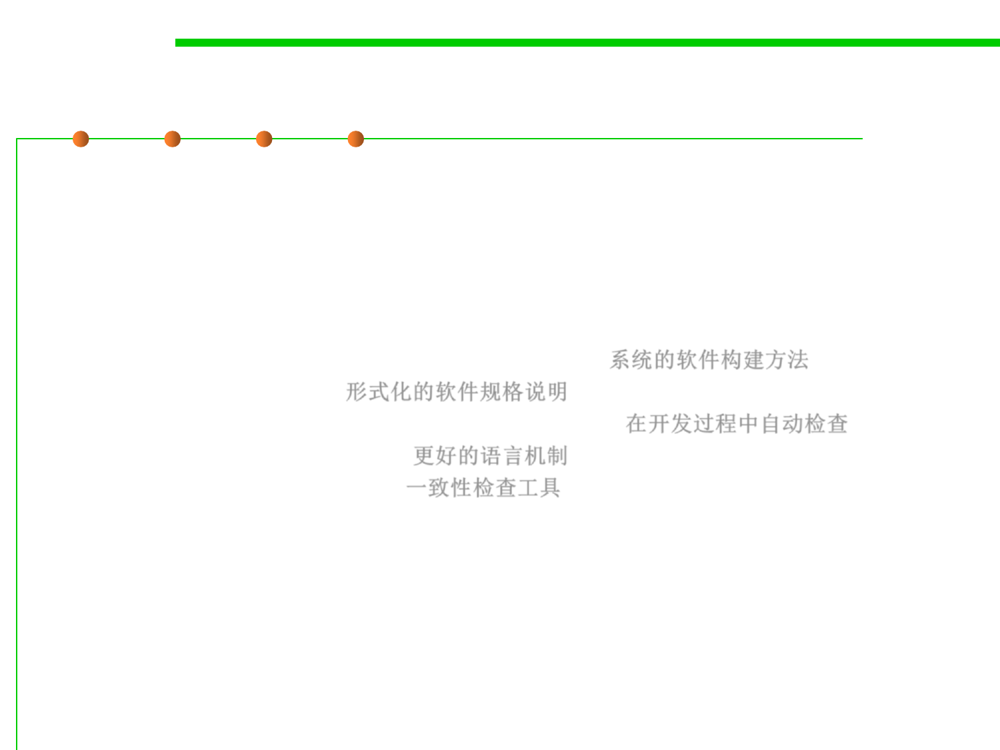

1.2 Quality Objectives of Software Construction
Key concerns of software construction
▪ All the qualities discussed above are important.
▪ But in the current state of the software industry, four stand out:
– Correctness and robustness: reliability
• Systematic approaches to software construction 系统的软件构建方法
• Formal specification 形式化的软件规格说明
• Automatic checking during development process 在开发过程中自动检查
• Better language mechanism 更好的语言机制
• Consistency checking tools 一致性检查工具
– Extendibility and reusability: modularity